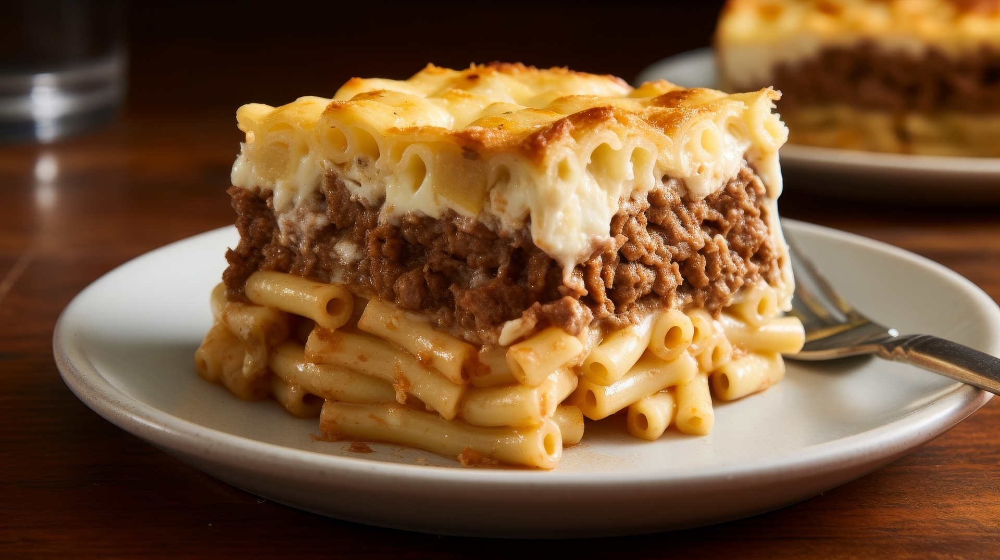

Pastitsio recipe
Back to main page

Photo of pastitsio
Description
Pastitsio (Greek: παστίτσιο, pastítsio) is a classic Greek baked pasta dish, often compared to lasagna but with
its own unique Mediterranean character. It features layers of tubular pasta (traditionally bucatini or penne), a
rich and aromatic ground meat sauce spiced with cinnamon and cloves, and a thick, creamy béchamel sauce on top.
The dish is assembled in distinct layers and baked until golden, resulting in a hearty, comforting casserole
with a signature blend of savory, spiced, and creamy flavors
Ingredients
- 400–425g Greek pastitsio pasta (bucatini or penne)
- 2 tablespoons olive oil
- 2 medium onions, finely chopped
- 2–4 garlic cloves, minced
- 800–900g lean ground beef (or a mix of beef and pork)
- 3/4 cup red wine
- 28 oz (800g) canned tomatoes (diced or crushed)
- 2 tablespoons tomato paste
- 1–2 carrots, diced (optional)
- 2 celery stalks, diced (optional)
- 1–2 teaspoons salt
- 1 teaspoon black pepper
- 1/4 teaspoon ground cloves
- 1 tablespoon dried basil
- 3/4 teaspoon allspice
- 2–3 bay leaves
- 1 tablespoon sugar
- 1 cup water (for sauce)
- 4 tablespoons unsalted butter
- 4 tablespoons all-purpose flour
- 4 cups whole milk (room temperature)
- 1/2 teaspoon nutmeg
- 1/2 teaspoon pepper (for béchamel)
- 2 cups grated parmesan or kefalograviera cheese
- 4 eggs, beaten
- Olive oil or butter for greasing the baking dish
Steps
- Preheat your oven to 180°C (350°F).
- Boil the pasta in salted water until just al dente. Drain and set aside.
- In a large pan, heat olive oil over medium heat. Sauté onions (and carrot/celery if using) until soft.
- Add garlic and cook for another minute. Stir in the ground beef and cook until browned.
- Pour in the red wine, let it simmer until mostly evaporated.
- Add canned tomatoes, tomato paste, salt, pepper, cinnamon, cloves, basil, allspice, bay leaves, sugar, and
water. Simmer uncovered for 20–30 minutes until thickened. Remove bay leaves.
- For the béchamel: In a saucepan, melt butter over medium-low heat. Whisk in flour to form a paste. Gradually
add milk, whisking constantly to avoid lumps. Cook, stirring, until thickened.
- Remove from heat. Whisk in nutmeg, pepper, cheese, and beaten eggs quickly (so eggs don’t scramble).
- Grease a large baking dish. Layer half the pasta on the bottom. Optionally, toss pasta with a little cheese
and egg white for binding.
- Spread all the meat sauce evenly over the pasta layer.
- Add the remaining pasta on top of the meat sauce.
- Pour the béchamel sauce over the top layer of pasta, smoothing it with a spatula. Sprinkle with extra
cheese.
- Bake for 40–50 minutes until the top is golden and set. Let it cool for at least 20–30 minutes before
slicing and serving.